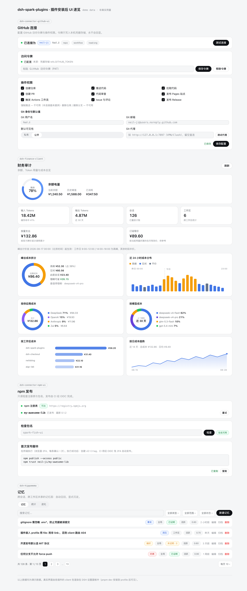

跨会话记忆、成本审计、GitHub / npm 连接器 —— 每一个像素都对齐 DSH Web 官方设计系统，每一次 dsh 升级都经过两道闸体检。

不是"风格相似"，而是直接复刻 DSH 的设计令牌。插件渲染在 DSH 设置面板里，与官方界面放在一起分辨不出来——因为它们本就出自同一套 design-platform.css。
颜色、圆角、字号、间距逐项取自 DSH 的 --dsw-* 变量表：bluish 灰阶、deepseek 品牌蓝、14px 卡片圆角、13px 正文节奏。
折叠设置卡、Pill 徽章、Segmented 分段器、StateDot 状态点、KPI 卡——全部按官方组件的结构与交互态实现，含深浅双主题。
文案走 DSH 的 locale 体系（默认中文），加载态、空态、错误态全部遵循官方规范——安装后没有"第三方感"。
host（能力）+ client（设置页 UI）+ wire（协议）分层，全部跑在 DSH 插件机制上，pnpm dev 一键装入 profile。
GitHub 连接器：令牌写入本机凭据存储，永不回显。
成本审计：把每次会话折算成真金白银。
跨会话/跨工作区共享记忆层。
npm 发布管线：token 全权接管——从起名、发布、打标签、弃用到 OIDC trust。
复刻 DSH 设计系统的本地 React 组件库，零 cordis 依赖。
client 设置页样板与 remote 协议定义，新插件的小时级脚手架。
dsh 迭代很快，接口与事件随时改名。本仓库每个插件线都钉死在经过验证的 dsh 版本上——装之前先对表，装完升级先过闸。
真实教训：dsh 曾把 ProjectionDefinition.schema/view 改成 stateSchema/wire、把事件 credentials/updated 改名 credentials/reference-updated——旧插件装上新版 dsh，轻则编译失败，重则静默失效。
| 你的 dsh 版本 | 兼容状态 | 说明 | 建议动作 |
|---|---|---|---|
| 0.1.1-rc.2 | 完全兼容 | 当前主线。typecheck / 255+ 用例 / 3999 狗粮全部通过 | 直接安装 |
| 0.1.1-rc.3+ | 未验证 | 同 tuple 新 rc：符号与事件可能被上游改名 | 先跑两道闸 |
| 0.1.0-rc.8 及更早 | 不兼容 | 插件已适配 0.1.1 的 projection / credentials 破坏性改动，回装旧宿主会缺符号 | 先升 dsh |
| 其他 / 更新的大版本 | 未验证 | 接口面 diff 未知，不排除编译级破坏 | 先跑两道闸 |
pnpm check:dsh-upgrade
把插件实际 import 的符号、接口成员、事件名逐个对到新版 .d.ts 里——删符号、改字段、换事件名都逃不掉。报告自动归档 docs/dsh-upgrade-reports/。
pnpm dryrun:dsh-upgrade
临时目录钉新版本、干净安装、全仓编译——专抓第一道闸报不出的运行期语义破坏。全绿才允许正式升级。
当前插件线适配 dsh 0.1.1-rc.2，其他版本先看上方兼容矩阵。需 Node ≥ 18 与 git。
dsh --version
克隆到 ~/.dsh/spark-plugins、构建并链入 profile。幂等，重复执行即更新：
curl -fsSL https://neil-ji.github.io/dsh-spark-plugins/install.sh | sh
重启 dsh web，到设置页完成各插件连接配置。变体：
install.sh --profile main --ref v0.2.0